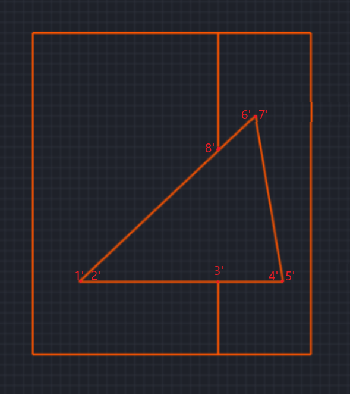
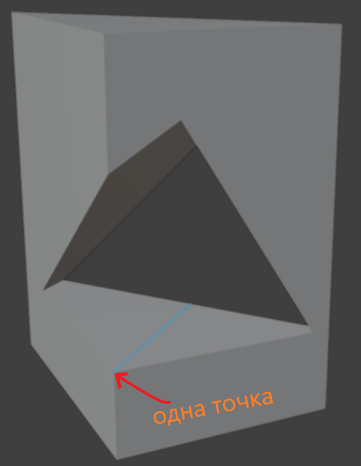
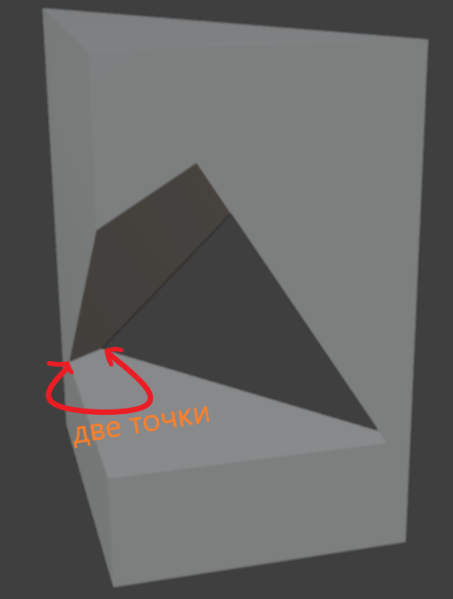
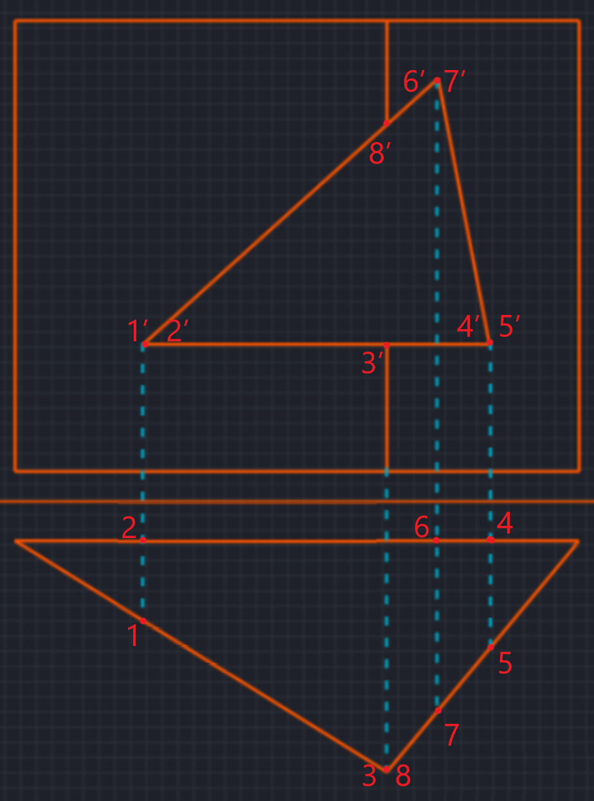
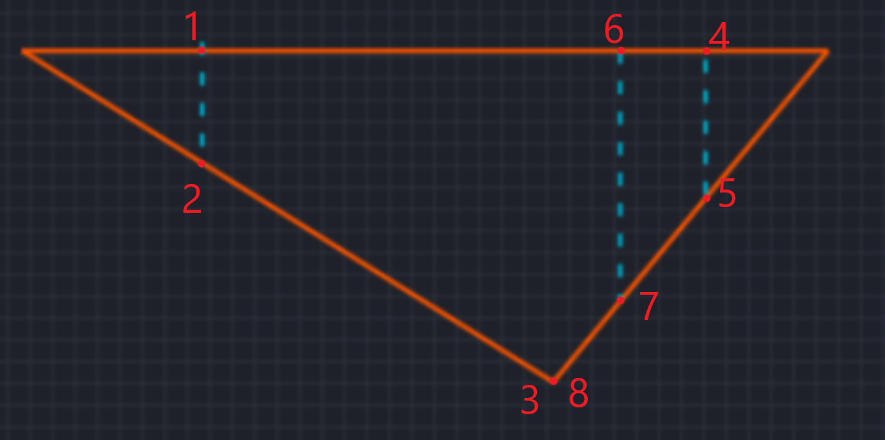

МЕТОД СЕКУЩЕЙ ПЛОСКОСТИ // ПРИЗМА построение линии пересечения
алгоритм последовательного получения точек пересечения · проекционная геометрия · линии связи и видимость
01
Определение точек пересечения
грани · рёбра
Правило: При пересечении секущей плоскостью двух граней получаем 2 точки. Если плоскость пересекает краевое ребро — 1 точка.
→ Все найденные точки наносятся на проекции.
→ Все найденные точки наносятся на проекции.



Обозначение: точки на фронтальной проекции — один штрих (A'), на профильной — два штриха (A'').
02
Перенос точек на основание · линии связи
проекционная связь
Методика: Из каждой точки, полученной на предыдущем этапе, опускается линия связи (перпендикуляр) до пересечения с нижним основанием. Точки фиксируются на горизонтальной проекции основания призмы.
Детали построения:
• Линии связи проводятся строго перпендикулярно плоскости основания (на чертеже — вертикальные линии связи для горизонтальной проекции).
• Каждая точка фиксируется пересечением линии связи с соответствующей проекцией ребра или грани на основании.
• Полученные точки на горизонтальной проекции основания нумеруются в порядке обхода (1, 2, 3…).
• Для проверки точности: расстояния между проекциями точек на основании должны соответствовать геометрии сечения.
• Линии связи проводятся строго перпендикулярно плоскости основания (на чертеже — вертикальные линии связи для горизонтальной проекции).
• Каждая точка фиксируется пересечением линии связи с соответствующей проекцией ребра или грани на основании.
• Полученные точки на горизонтальной проекции основания нумеруются в порядке обхода (1, 2, 3…).
• Для проверки точности: расстояния между проекциями точек на основании должны соответствовать геометрии сечения.
Важно: линии связи обеспечивают координатную привязку. При переносе на профильную проекцию используются горизонтальные линии связи (параллельные оси X).

Линии связи на эпюре: всегда перпендикулярны оси проекции (ось X / горизонтальная линия связи).
03
Построение контура сечения · видимость
анализ связей
Обход контура: соединяются точки, между которыми есть связь (принадлежность одной грани). Учитывается видимость: видимые участки — сплошная линия, невидимые — штриховая.

Видимость: отрезок видим, если принадлежит видимой части грани. Невидимые — штриховой линией (пунктир).
04
Построение третьей проекции (профильной)
проекция на π₃
Завершение: точки переносятся на профильную проекцию линиями связи. Соединяются в том же порядке, что и на горизонтальной проекции, с учётом видимости. Ниже представлены два ключевых этапа: построение профильной проекции и готовое сечение в трёх проекциях.


Третья проекция завершает эпюр: координаты переносятся с горизонтальной и фронтальной проекций. На левом рисунке — процесс построения профильной проекции, на правом — окончательный вид сечения в системе трёх плоскостей проекций.
Правило построения π₃: горизонтальные линии связи от фронтальной и горизонтальной проекций определяют положение точек на профильной плоскости.
Сводный алгоритм (сечение призмы)
1. Анализ
Определить пересекаемые грани/рёбра → количество точек
2. Нанесение
Нанести точки на фронтальную/горизонтальную проекции
3. Линии связи
Перенос на основание и профильную проекцию
4. Соединение
Обход контура с учётом видимости
NB: Точки на фронтальной — один штрих (1'), на профильной — три штриха (1‴)
Две грани → 2 точки, краевое ребро → 1 точка